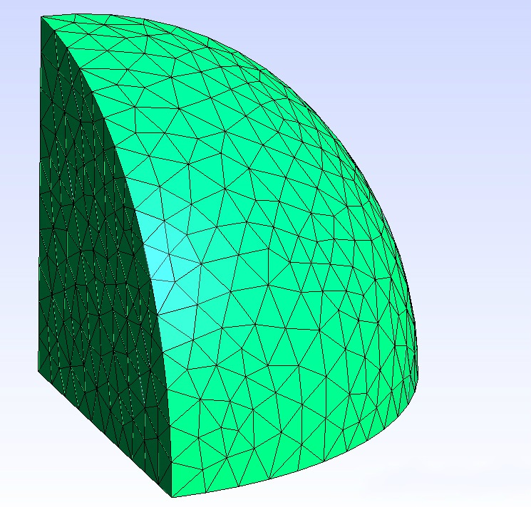
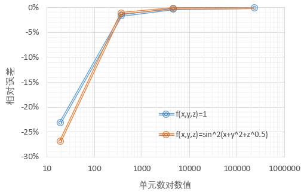

上限法塑性功数值积分算例：三重积分¶
发布于：2014-12-24 | 分类：numeric calculation
当上限法拓展应用到三维成形问题，三重积分就在所难免了；并且考虑到积分区域无法解析表达，此时数值积分是唯一的选择。之前文章给出了平面问题中上限法塑性功数值积分算例，本文即以具体示例介绍三维上限法计算过程中可能遇到的体积积分问题。
算例：在半径为1的八分之一球体区域\Omega（第一卦限）上计算f(x,y,z)的积分
特别地，当f(x,y,z)=1时，其几何意义为八分之一球的体积。
计算思路¶
思路其实很明晰：
-
建立球体的几何模型
-
划分网格得到单元及节点坐标数据，编程读入网格数据
这个可以在网格划分软件中执行，保存的文件格式选取通用的
Nastran格式，或者其他的包含单元信息的文件，例如Marc的.dat格式。然后根据保存的文件格式，将数据读入到自己的程序中来。 -
进行数值积分
将积分区域离散后，以有限积分点的插值数据来替代单元上连续的函数值，得到每个单元的数值积分结果，最后求和。
\int_{\Omega}{f(x,y,z)\,\mathrm{d}V} = \sum_{i=1}^m{\left[\int_{V_i}f(x_i,y_i,z_i)\,\mathrm{d}V \right]} = \sum_{i=1}^m{f(x_i,y_i,z_i)\,V_i}
计算实例¶
本文采用开源的集成有限元前后处理的网格生成程序Gmsh进行几何建模与单元划分，然后借助Python的科学计算库NumPy完成具体计算过程。Gmsh的项目主页参见
本次计算中采用的是四面体单元，因为四面体具有简易的体积计算公式。积分方案为Hammer积分，根据积分精度可选取线性、二次及三次积分点，参见王勖成《有限单元法》Page 151。本次计算直接采用线性的积分方案，即以四面体单元四个节点上函数值的平均值作为单元的函数值。

计算过程中，选取不同的被积函数f(x,y,z)、同时设置不同的单元数，并与matlab数值积分结果进行对比，如下表所示。
| 被积函数 | 19单元 | 370单元 | 4560单元 | 232705单元 | matlab |
|---|---|---|---|---|---|
| f(x,\,y,\,z)=1 | 0.402571 | 0.515488 | 0.522304 | 0.523514 | 0.523599 |
| f(x,\,y,\,z)=\sin^2\left(x+y^2+\sqrt{z}\right) | 0.300058 | 0.405632 | 0.410014 | 0.410513 | 0.410495 |
可以使用
triplequad()或者integral3()进行matlab三重数值积分，并且本例积分区域在球坐标系可以转化为常数积分限。
triplequad(@(x,y,z) x.^2.*sin(y).*sin(x.*sin(y).*cos(z)+(x.*sin(y).*sin(z)).^2+(x.*cos(y)).^0.5).^2,0,1,0,pi/2,0,pi/2)
根据上表作图即可得到本算例网格划分数量与解的收敛性的关系，结果表明离散积分得到的结果随着单元数的增多而收敛于真实解；但是，当单元细化到一定级别后，继续通过细化的方式提升计算精度的效率急剧下降。
